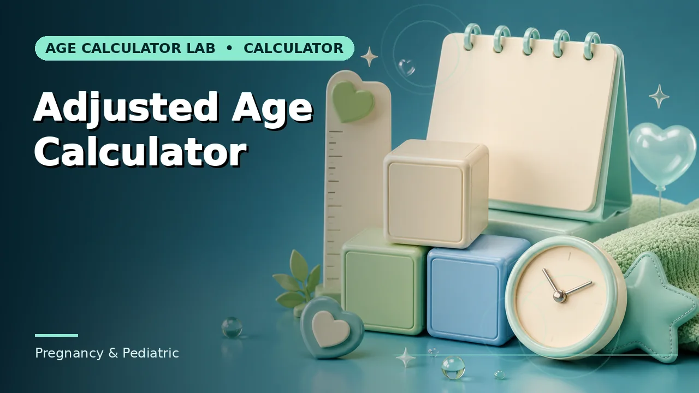
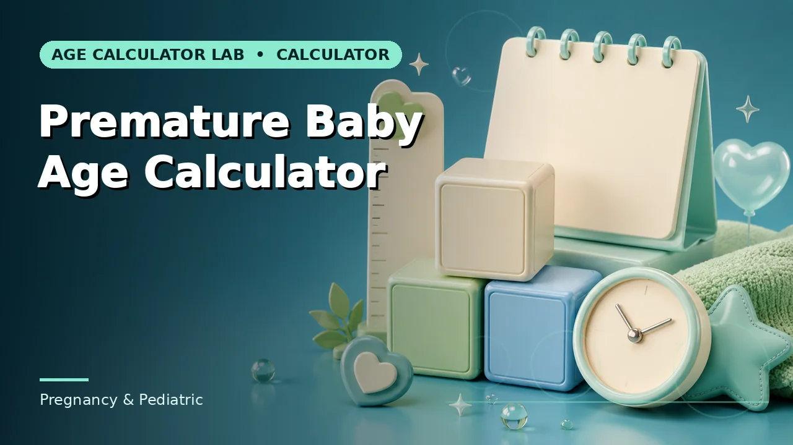

Quick answer
Ask which age applies to the specific purpose rather than looking for a general rule, and record the point at which correction was discontinued.
Why there is no single answer
The question sounds like it should have a date attached, and it does not. Practice commonly discusses correcting through the first two years, with longer periods sometimes used for babies born very preterm — but that is a general pattern, not a rule, and different sources give different periods.
Assessment instruments complicate it further, because many specify their own correction rules that apply regardless of what general practice does. An instrument may direct correction up to a particular age and no further, and that instruction governs when you are using it.
Use this guide with the right tool: Open the Corrected Age Calculator for chronological age adjusted for weeks of prematurity. If the question shifts, compare it with the Adjusted Age Calculator or the Premature Baby Age Calculator.
The purpose decides
The useful reframing is to stop asking when correction ends and start asking which age this particular purpose wants. Developmental milestone discussion, a specific standardised assessment, an immunisation schedule, a nursery form and a growth chart may each want a different answer, and they can all be true at once.
That is why a single cutoff would not help even if one existed. A child can be past the point where developmental conversations use corrected age while an assessment they are about to take still directs it.
Correction fades rather than stopping
In practice the gap between the two ages becomes proportionally smaller as a child grows. Eight weeks is a quarter of a six-month-old's life and a fraction of a four-year-old's, so the correction matters less over time even before anyone decides to stop applying it.
This is part of why the transition is rarely announced. It usually happens because the difference has stopped changing any interpretation, not because a threshold was crossed on a particular day.
Record the transition
Whenever correction stops for a child, that fact belongs in the record with a date and a reason. Without it, a later reader looking at an age has no way to know whether it was corrected, and the ambiguity is largest exactly during the transition period.
Where you are unsure which age applies, ask the paediatric or developmental team directly. It is a short question with a specific answer for that child and that purpose, and it is more reliable than any general guidance including this page.
Worked example
Swap in your own figures and the method carries over unchanged. What does not carry over is the source of authority, which is specific to your situation.
Common mistakes to avoid
- Looking for a universal cutoff. There isn't one. The answer depends on the purpose, the child and the guidance being applied.
- Assuming an assessment follows general practice. Instruments set their own correction rules and those govern when you are using them.
- Stopping correction without recording it. A later reader cannot tell whether an age was corrected. Note the date and the reason.
Use the right calculator
Pick the one whose inputs match the information you actually have. Each page explains what its result does and does not cover.


Frequently asked questions
Is two years the standard?
It is a commonly discussed period, not a standard. Longer is sometimes used for very preterm babies, and instruments set their own rules.
Who decides for my child?
The paediatric or developmental team managing their care, and the manual of any specific assessment being used.
Does correction ever apply to school entry?
School entry runs on chronological age from the date of birth. Any exception would be a separate decision by the education authority.